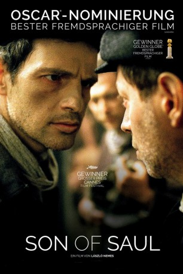

#3879 Son of Saul
Auszeichnungen: 5 Oscars gewonnen 4 GoldenGlobes gewonnen
 
 IMDB-Wertung: 7.5 / 10
IMDB-Wertung: 7.5 / 10  Tomatometer: 95
Tomatometer: 95  Metascore: 0
Metascore: 0 
Das Vernichtungslager Auschwitz-Birkenau im Oktober 1944: Der ungarische Gefangene Saul Ausländer wird gezwungen, sich einem Sonderkommando von jüdischen Inhaftierten anzuschließen. Saul ist damit vom Rest des Lagers isoliert und muss eine Aufgabe übernehmen, die schrecklicher nicht sein könnte: Er muss bei der Massenvernichtung der Gefangenen mithelfen und die Leichenberge in den Krematorien verbrennen, wird also in den von Oberscharführern wie Voss und Busch überwachten Arbeitsablauf eingebunden. Moralische Erlösung findet Saul angesichts des Unfassbaren nur, als er die Leiche eines kleinen toten Jungen "rettet", indem er dessen Körper nicht den Flammen überlässt, sondern ihn fortan wie seinen eigenen Sohn behandelt. Als das Sonderkommando eine Rebellion plant, beschließt Saul das Unmögliche: Er will den Leichnam des Kindes heimlich einem Rabbi übergeben und dem Jungen so eine menschenwürdige Beerdigung zukommen lassen…
Jahr: 2015
Dauer: 107 Minuten
FSK: 16
Land: Ungarn Studio: Sony Pictures ReleasingTonspuren:
Untertitel: Deutsch,
Auflösung: 1080p (1488x1080) Größe: 7833 MB
Genre: Thriller, Drama, Krieg
Regisseur: László Nemes
Drehbuch: Stanley R. Greenberg
Soundtrack:
Darsteller:
- Géza Röhrig als Saul Ausländer
- Levente Molnár als Abraham Warszawski
 Urs Rechn als Oberkapo Biederman
Urs Rechn als Oberkapo Biederman- Todd Charmont als Bearded Prisoner
- Marcin Czarnik als Feigenbaum
- Uwe Lauer als Oberscharführer Voss
 Christian Harting als Oberscharführer Busch
Christian Harting als Oberscharführer Busch- Amitai Kedar als Hirsch, Gold Collector
 Björn Freiberg als Extra
Björn Freiberg als Extra- Tom Pilath als SS Officer
- Jerzy Walczak als Rabbi Frankel
- Gergö Farkas als Saul's Son
- Balázs Farkas als Saul's Son
- Sándor Zsótér als Dr. Miklos Nyiszli
- Levente Orbán als Russian Prisoner
- Kamil Dobrowolski als Mietek
- Attila Fritz als Yankl, Young Prisoner
- Mihály Kormos als Schlojme
- Márton Ágh als Apikoyres, Greek Rabbi
- István Pion als Katz
- Juli Jakab als Ella
- Tamás Polgár als Landesman
- Rozi Székely als Female Kapo
- Erno Fekete als SS Doctor
- László Somorjai als Old Rabbi
- Sandor Altmann als
- Bálint Bagladi als Soldier
- Norbert Bagladi als Soldier
- Tamás Bakó als Movement artist
- Zoltán Bathó als Soldier
- Gyula Berger als Movement artist
- Anna Biczók als Movement artist
- Arnaud Blondel als Movement artist
- János Tibor Boldizsár als
- Gábor Bora als Movement artist
- Tamás Brán als Soldier
- Mendy Cahan als Sonderkommando Member
- Marcio Canabarro als Movement artist
- Gyula Cserepes als Movement artist
- Zoltán Cservák als
- Márton Csuzi als Movement artist
- Eszter Csépai als Young girl in female barrack
- Emese Cuhorka als Movement artist
- Márton Debreczeni als Movement artist
- Dániel Dragos als Movement artist
- Viktória Dányi als Movement artist
- Judit Dömötör als Movement artist
- Bea Egyed als Movement artist
- Péter Fancsikai als
- Bence Farkas als Soldier
Datei: X:\2015(N-Z)\Son of Saul (2015, FSK16, 1488x1080).mkv seit 26.06.2016
Festplatte: HD 2015(A-Z)
 Es gibt insgesamt 161 Filme in der Gruppe '2015(N-Z)'
Es gibt insgesamt 161 Filme in der Gruppe '2015(N-Z)'